Introduction
Face morphing is a kind of attack wherein the attacker attempts to combine the faces of two real identities into one face. This attack exploits the structure of the embedding space of the face recognition (FR) system. FR systems generally work by embedding the image — which is hard to compare — into some kind of vector space which makes it easier to compare; this space is referred to as the feature space of the FR system. Once a user is enrolled into the FR system, an acceptance regionIf the measure of distance is a proper metric, like $\ell^2$, and not just a semi-metric, this forms a ball around the enrolled user. is defined around the enrolled user in the feature space. If there exists an overlap between the acceptance regions of two identities in the feature space, then a face morphing attack can be performed.
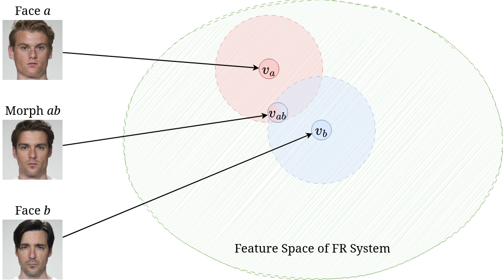
Face morphing attacks fall broadly into two categories.
- Landmark-based attacks create morphed images by warping and aligning facial landmarks of the two face images before performing a pixel-wise average to obtain the morph.
- Representation-based attacks create morphs by first embedding the original images into a representational space; once embedded into this space, an interpolation between the two embeddings is constructed to a morphed representation. This morphed representation is then projected back into the image space to create the morphed image.
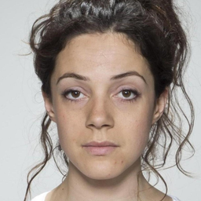
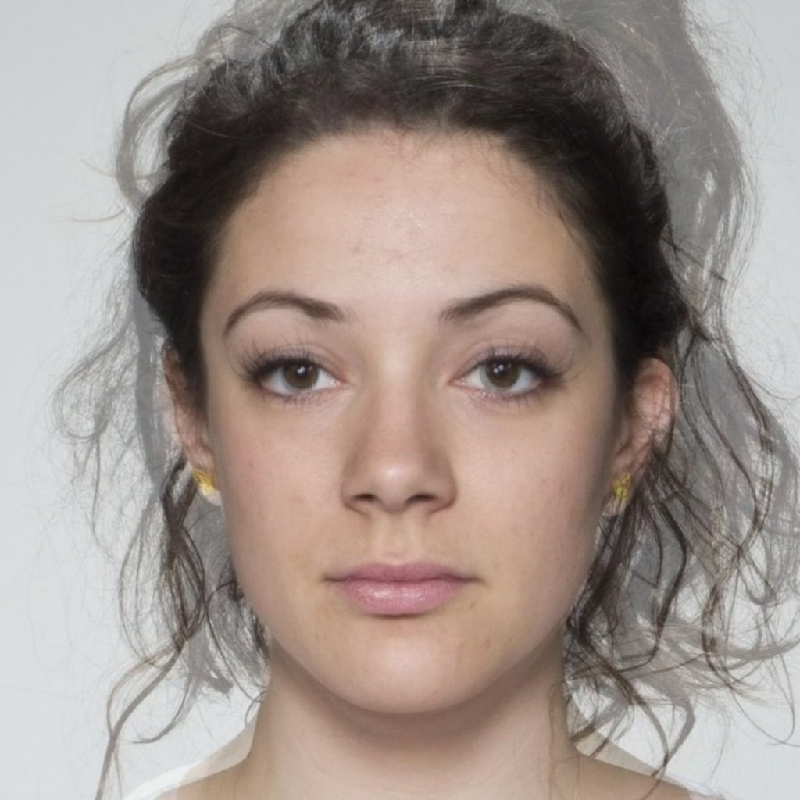
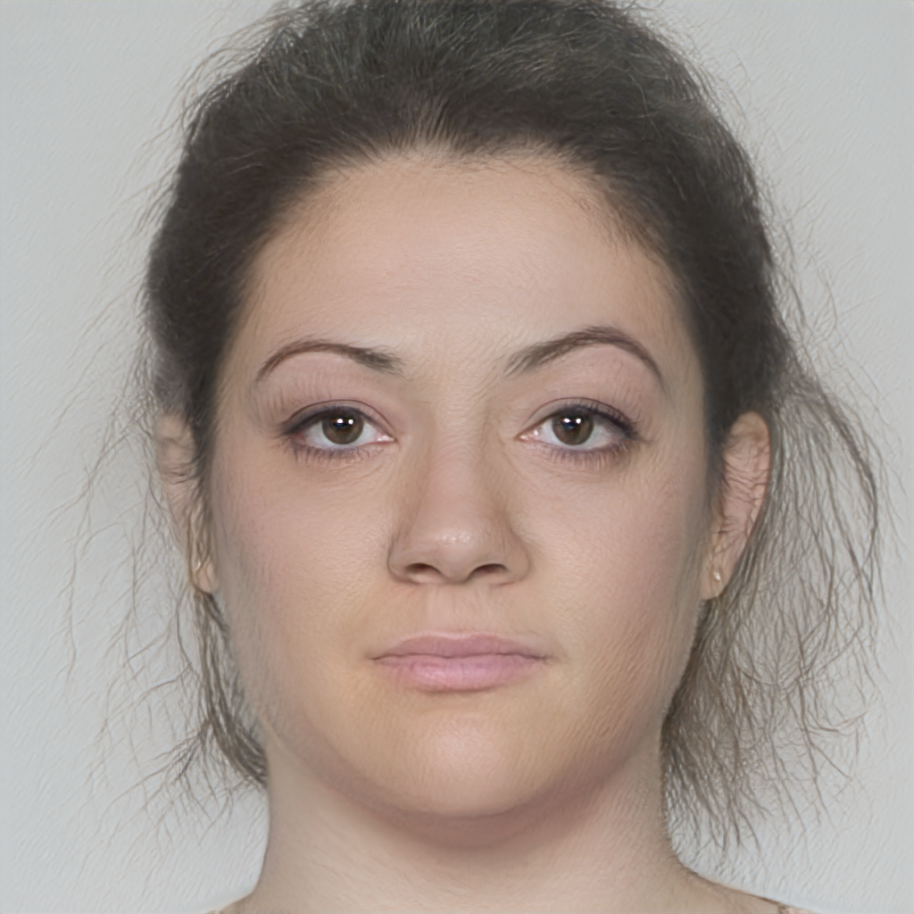
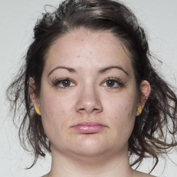
Figure 2Comparison between a landmark-based morph (OpenCV) and a representation-based morph (MIPGAN-II).
Historically, representation-based morphs have been created using Generative Adversarial Networks (GANs) — a type of generative model which learns a mapping from a representation space to image space in an adversarial manner. One challenge with GAN-based morphing is learning how to embed the original images into the representation space. Researchers have proposed several techniques for this, ranging from training an encoder network jointly with the GAN, training an additional encoding network, to inverting an image into the representation space via optimization. Once the original faces are mapped into the representation space, the representations can be morphed using linear interpolation and additionally optimized w.r.t. some identity loss.
Landmark-based attacks are simple and surprisingly effective when compared to representation-based attacks. However, they struggle with prominent visual artefacts — especially outside the central face region. While representation-based attacks do not suffer from the glaring visual artefacts which plague the landmark-based attacks, their ability to fool an FR system is severely lacking.
In this post, I introduce a novel family of representation-based attacks collectively known as Diffusion Morphs (DiM), which addresses both the issues of prominent visual artefacts and the inability to adequately fool an FR system. The key idea is to use a type of iterative generative model known as diffusion models or score-based models. DiMs have achieved state-of-the-art performance on the face morphing task and have even yielded insight on related tasks, e.g., guided generation of diffusion models.
Diffusion
Diffusion models start with a diffusion process which perturbs the original data distribution $p(\bfx)$ on some subset of Euclidean space $\X \subseteq \R^n$ into isotropic Gaussian noise $\mathcal{N}(\mathbf 0, \mathbf I)$. This process can be modeled with an Itô stochastic differential equation (SDE) of the form
\begin{equation} \rmd\bfx_t = f(t)\bfx_t\; \rmd t + g(t)\; \rmd\bfw_t, \end{equation}where $f, g$ are real-valued functions, $\{\bfw_t\}_{t \in [0, T]}$ is the standard Wiener process on time $[0, T]$, and $\rmd\bfw_t$ can be thought of as infinitesimal white noise. The drift coefficient $f(t)\bfx_t$ is the deterministic part of the SDE and $f(t)\bfx_t\;\rmd t$ can be thought of as the ODE term of the SDE. Conversely, the diffusion coefficient $g(t)$ is the stochastic part of the SDE which controls how much noise is injected into the system. We can think of $g(t)\;\rmd\bfw_t$ as the control term of the SDE.
The solution to this SDE is a continuous collection of random variables $\{\bfx_t\}_{t \in [0, T]}$ over the real interval $[0, T]$; these random variables trace stochastic trajectories over the time interval. Let $p_t(\bfx_t)$ denote the marginal probability density function of $\bfx_t$. Then $p_0(\bfx_0) = p(\bfx)$ is the data distribution; likewise, for some sufficiently large $T \in \R$ the terminal distribution $p_T(\bfx_T)$ is close to some tractable noise distribution $\pi(\bfx)$, called the prior distribution.

Reversing the diffusion SDE
So far we have only covered how to destroy data by perturbing it with white noise; however, for sampling we need to be able to reverse this process to create data from noise. Remarkably, showed that any Itô SDE has a corresponding reverse SDE given in closed form by
\begin{equation} \label{eq:rev_sde} \rmd\bfx_t = [f(t)\bfx_t - g^2(t)\nabla_\bfx\log p_t(\bfx_t)]\;\rmd t + g(t)\; \rmd\tilde\bfw_t, \end{equation}where $\nabla_\bfx\log p_t(\bfx_t)$ denotes the score function of $p_t(\bfx_t)$. Note that the control term is now driven by the backwards Wiener process defined as $\tilde\bfw_t := \bfw_t - \bfw_T$. To train a diffusion model, then, we just need to learn the score function or some closely related quantity like the added noise or $\bfx_0$-prediction. Many diffusion models use the following choice of drift and diffusion coefficients
\begin{equation} f(t) = \frac{\rmd \log \alpha_t}{\rmd t},\qquad g^2(t)= \frac{\rmd \sigma_t^2}{\rmd t} - 2 \frac{\rmd \log \alpha_t}{\rmd t} \sigma_t^2, \end{equation}where $\alpha_t,\sigma_t$ form a noise schedule such that $\alpha_t^2 + \sigma_t^2 = 1$ and
\begin{equation} \bfx_t = \alpha_t\bfx_0 + \sigma_t\bseps_t, \qquad \bseps_t \sim \mathcal{N}(\mathbf 0, \mathbf I). \end{equation}Diffusion models which use noise prediction train a neural network $\bseps_\theta(\bfx_t, t)$ parameterized by $\theta$ to predict $\bseps_t$ given $\bfx_t$, which is equivalent to learning $\bseps_\theta(\bfx_t, t) = -\sigma_t\nabla_\bfx \log p_t(\bfx_t)$. This choice of drift and coefficients forms the Variance Preserving SDE (VP SDE) type of diffusion SDE.
Probability Flow ODE
Song et al. showed the existence of an ODE, dubbed the Probability Flow ODE, whose trajectories have the same marginals as Equation (\ref{eq:rev_sde}), of the form
\begin{equation} \label{eq:pf_ode} \frac{\rmd\bfx_t}{\rmd t} = f(t)\bfx_t - \frac 12 g^2(t) \nabla_\bfx \log p_t(\bfx_t). \end{equation}One of the key benefits of expressing diffusion models in ODE form is that ODEs are easily reversible — by simply integrating forwards and backwards in time we can encode images from $p_0(\bfx_0)$ into $p_T(\bfx_T)$ and back again. With a neural network, often a U-Net, $\bseps_\theta(\bfx_t, t)$ trained on noise prediction, the empirical Probability Flow ODE is now
\begin{equation} \label{eq:empirical_pf_ode} \frac{\rmd\bfx_t}{\rmd t} = f(t)\bfx_t + \frac{g^2(t)}{2\sigma_t} \bseps_\theta(\bfx_t, t). \end{equation}DiM
Diffusion Morphs (DiM) are a novel kind of face morphing algorithm which solve the Probability Flow ODE both forwards and backwards in time to achieve state-of-the-art visual fidelity and morphing performance far surpassing previous representation-based morphing attacks. The DiM framework could use many different diffusion backbones like DDPM, LDM, DiT, &c. However, in our work we opted to use the Diffusion Autoencoder trained on the FFHQ dataset which conditions the noise prediction network $\bseps_\theta(\bfx_t, \bfz, t)$ on a latent representation, $\bfz$, of the target image.
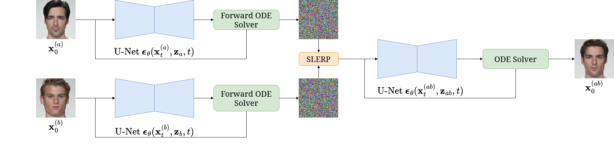
Before discussing the DiM pipeline let's establish some nomenclature. Let $\bfx_0^{(a)}$ and $\bfx_0^{(b)}$ denote two bona fide images of identities $a$ and $b$. Let $\Z$ denote the latent vector space and let $\bfz_a = E(\bfx_0^{(a)})$ denote the latent representation of $a$ and likewise for $\bfz_b$, where $E: \X \to \Z$ is an encoding network. Let $\Phi(\bfx_0, \bfz, \mathbf{h}_\theta, \{t_n\}_{n=1}^N) \mapsto \bfx_T$ denote a numerical ODE solver which takes an initial image $\bfx_0$, latent representation $\bfz$, the ODE in Equation (\ref{eq:empirical_pf_ode}) denoted by $\rmd\bfx_t / \rmd t = \mathbf{h}_\theta(\bfx_t, \bfz, t)$, and timesteps $\{t_n\}_{n=1}^N \subseteq [0, T]$. Let $\lerp(\cdot, \cdot; \gamma)$ denote linear interpolation by a weight of $\gamma$ on the first argument, and likewise $\slerp(\cdot, \cdot; \gamma)$ for spherical linear interpolation.
The DiM pipeline works by first solving the Probability Flow ODE as time flows with $N_F \in \N$ timesteps forwards for both identities, i.e.,
\begin{equation} \bfx_T^{(\{a, b\})} = \Phi(\bfx_0^{(\{a, b\})}, \bfz_{\{a, b\}}, \mathbf{h}_\theta, \{t_n\}_{n=1}^{N_F}), \end{equation}to find the noisy representations of the original images. We then morph both the noisy and latent representations by a factor of $\gamma = 0.5$ to find
\begin{equation} \bfx_T^{(ab)} = \slerp(\bfx_T^{(a)}, \bfx_T^{(b)}; \gamma), \qquad \bfz_{ab} = \lerp(\bfz_a, \bfz_b; \gamma). \end{equation}Then we solve the Probability Flow ODE as time runs backwards with $N \in \N$ timesteps $\{\tilde t_n\}_{n=1}^N$ where $\tilde t_1 = T$ such that
\begin{equation} \bfx_0^{(ab)} = \Phi(\bfx_T^{(ab)}, \bfz_{ab}, \mathbf{h}_\theta, \{\tilde t_n\}_{n=1}^{N}). \end{equation}All these equations for DiM can be summarized with the following PyTorch pseudo-code.
def dim(model, encoder, diff_eq, ode_solver, x_a, x_b, eps=0.002, T=80., n_encode=250, n_sample=100):
"""
DiM algorithm.
Args:
model (nn.Module): Noise prediction U-Net (or x-prediction / v-prediction).
encoder (nn.Module): Encoder network.
diff_eq (function): RHS of Probability Flow ODE.
ode_solver (function): Numerical ODE solver, e.g., RK-4, Adams-Bashforth.
x_a (torch.Tensor): Image of identity a.
x_b (torch.Tensor): Image of identity b.
eps (float): Starting timestep. Defaults to 0.002. For numeric stability.
T (float): Terminal timestep. Defaults to 80.
n_encode (int): Number of encoding steps. Defaults to 250.
n_sample (int): Number of sampling steps. Defaults to 100.
Returns:
x_morph (torch.Tensor): The morphed image.
"""
# Create latents
z_a = encoder(x_a)
z_b = encoder(x_b)
# Encode images into noise
timesteps = torch.linspace(eps, T, n_encode)
xs = ode_solver(torch.cat((x_a, x_b), dim=1), torch.cat((z_a, z_b), dim=1), diff_eq, timesteps)
x_a, x_b = xs.chunk(2, dim=1)
# Morph representations
z_ab = torch.lerp(z_a, z_b, 0.5)
x_ab = slerp(x_a, x_b, 0.5) # assumes slerp is defined somewhere
# Generate morph
timesteps = torch.linspace(T, eps, n_sample)
x_morph = ode_solver(x_ab, z_ab, diff_eq, timesteps)
return x_morph
A few important observations:
- The number of encoding steps $N_F$ does not need to equal the number of sampling steps $N$ — i.e., these processes are decoupled.
- We can use separate numerical ODE solvers for encoding and sampling.
- Samples are iteratively generated, meaning there are more ways to guide the morph generation process.
By using the powerful and flexible framework of diffusion models we can achieve state-of-the-art visual fidelity and morphing performance, measured in MMPMR.The Mated Morph Presentation Match Rate (MMPMR) metric is a measure of how vulnerable an FR system is to a morphing attack and is defined as $M(\delta) = \frac{1}{M} \sum_{n=1}^M \big\{\big[\min_{n \in \{1,\ldots,N_m\}} S_m^n\big] > \delta\big\}$, where $\delta$ is the verification threshold, $S_m^n$ is the similarity score of the $n$-th subject of morph $m$, $N_m$ is the total number of contributing subjects to morph $m$, and $M$ is the total number of morphed images. Visually, the morphs produced by DiM look more realistic than the landmark-based morphs with their prominent artefacts, and even better than the GAN-based morphs.
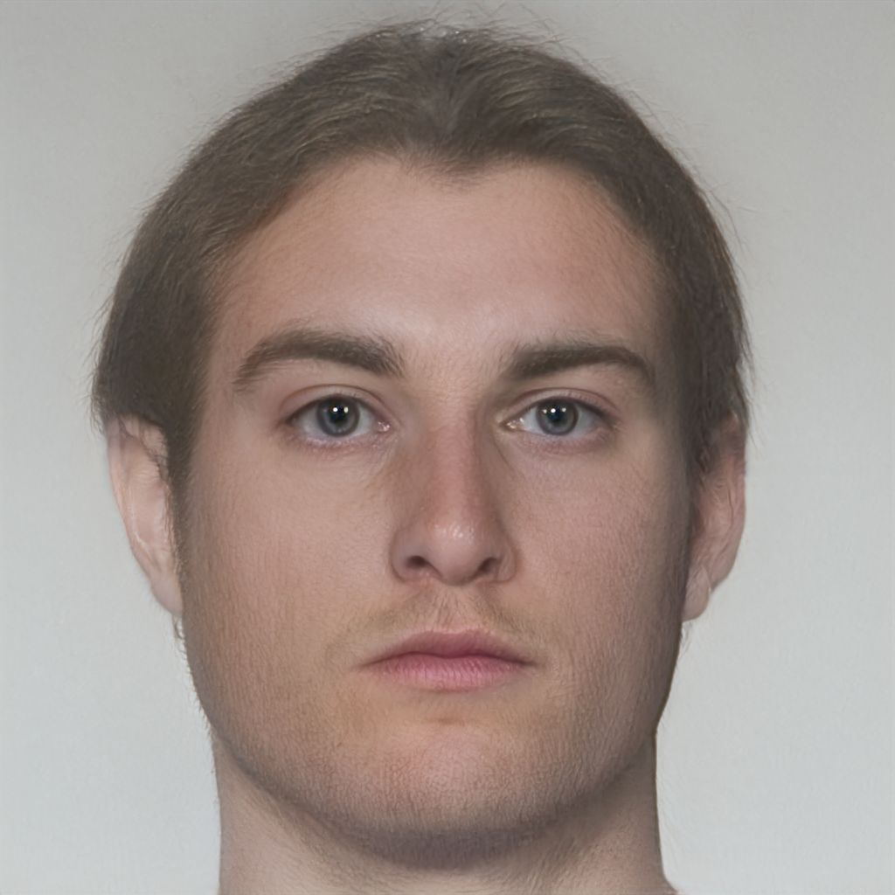

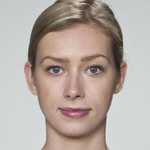
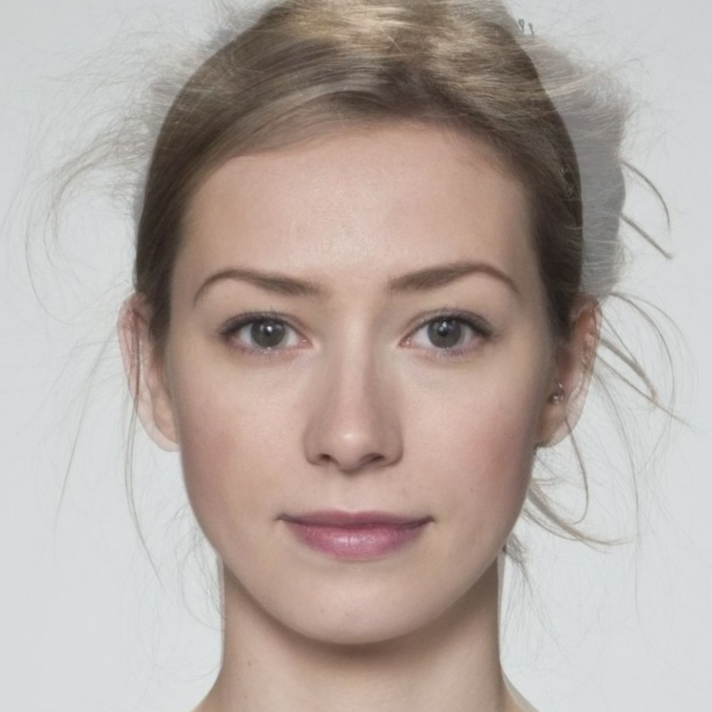
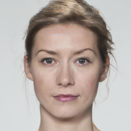
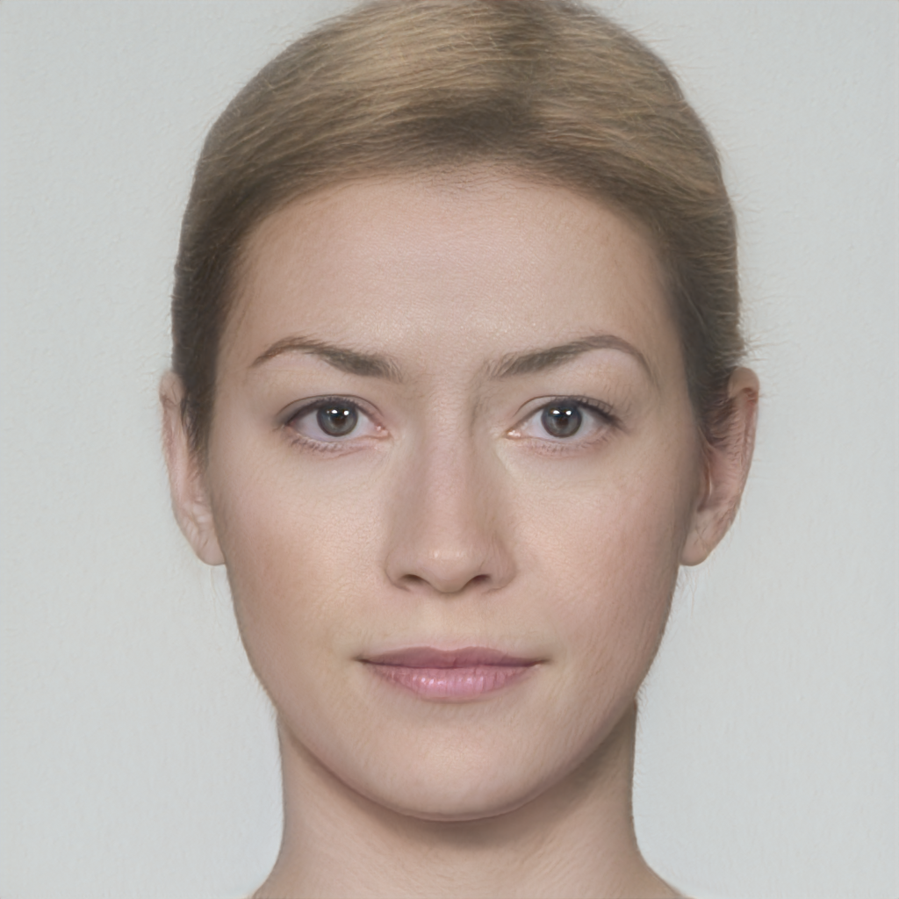
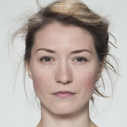
Figure 5Comparison between morphed images generated via OpenCV, DiM, and MIPGAN-II.Due to the computational demands needed to train a diffusion model on the image space, the U-Net we use was trained at a $256 \times 256$ resolution, whereas less computationally demanding morphs are at a higher resolution. This difference is trivial, however, as most images are cropped and down-sampled, e.g., to $112 \times 112$, before being passed to the FR system.
| Morphing attack | AdaFace | ArcFace | ElasticFace |
|---|---|---|---|
| FaceMorpher | 89.78 | 87.73 | 89.57 |
| OpenCV | 94.48 | 92.43 | 94.27 |
| MIPGAN-I | 72.19 | 77.51 | 66.46 |
| MIPGAN-II | 70.55 | 72.19 | 65.24 |
| DiM | 92.23 | 90.18 | 93.05 |
High-order ODE solvers
The Probability Flow ODE in Equation (\ref{eq:empirical_pf_ode}) can be transformed from a stiff ODE into a semi-linear ODE by using exponential integrators. showed that the exact solution at time $t$ given $\bfx_s$ starting from time $s$ is given by
\begin{equation} \bfx_t = \underbrace{\vphantom{\int_{\lambda_s}}\frac{\alpha_t}{\alpha_s}\bfx_s}_{\textrm{analytically computed}} - \alpha_t \underbrace{\int_{\lambda_s}^{\lambda_t} e^{-\lambda} \bseps_\theta(\bfx_\lambda, \lambda)\;\rmd\lambda}_{\textrm{approximated}}, \end{equation}where $\lambda_t := \log(\alpha_t / \sigma_t)$ is one half of the log-SNR, which removes the error for the linear term. The remaining integral term is approximated by exploiting the wealth of literature on exponential integrators — e.g., take a $k$-th order Taylor expansion around $\lambda_s$ and apply multi-step methods to approximate the $n$-th order derivatives.
Previously, DiM used DDIM, a first-order ODE solver of the form
\begin{equation} \bfx_{t_n} = \frac{\alpha_{t_n}}{\alpha_{t_{n-1}}}\bfx_{t_{n-1}} - \sigma_{t_n}(e^{h_n} - 1)\bseps_\theta(\bfx_{t_{n-1}}, \bfz, t_{n-1}), \end{equation}where $h_n = \lambda_{t_n} - \lambda_{t_{n-1}}$ is the step size of the ODE solver. This, however, means that we have a global truncation error of $\mathcal{O}(h)$ (Theorem 3.2 in). This means that we need a very small step size to keep the error small, or in other words, we need a large number of sampling steps to accurately encode and sample the Probability Flow ODE. The initial DiM implementation used $N_F = 250$ encoding steps and $N = 100$ sampling steps. An initial study we conducted found these to be optimal with the first-order solver.
By using a second-order multistep ODE solver — DPM++ 2M — we can significantly reduce the number of network function evaluations (NFE), i.e., the number of times we run the neural network (a very expensive operation), without meaningfully reducing the performance of the morphing attack. Likewise, the visual impact on the appearance of the morphed face seems to be quite small. Therefore, by switching to a high-order ODE solver we can significantly reduce the NFE while retaining comparable performance to vanilla DiM. We call this approach Fast-DiM due to its reduced computational demand.
| ODE solver | NFE ↓ | AdaFace (MMPMR ↑) | ArcFace (MMPMR ↑) | ElasticFace (MMPMR ↑) |
|---|---|---|---|---|
| DDIM | 100 | 92.23 | 90.18 | 93.05 |
| DPM++ 2M | 50 | 92.02 | 90.18 | 93.05 |
| DPM++ 2M | 20 | 91.26 | 89.98 | 93.25 |
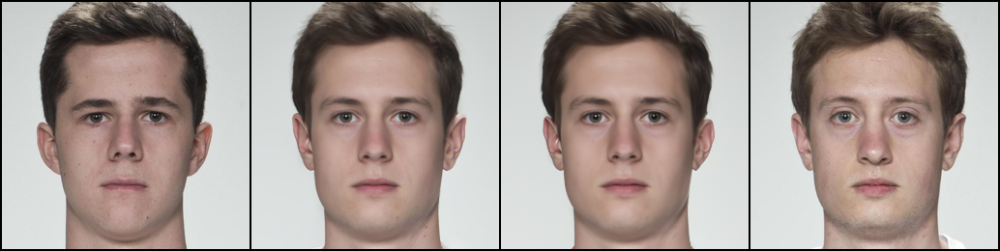
While we have shown that by solving the Probability Flow ODE as time runs backwards with high-order solvers we can significantly reduce the NFE with no downside, we have yet to explore the impact on the encoding process. Interestingly, we discovered that the success of DiM morphs is highly sensitive to the accuracy of the encoding process. Merely dropping the number of encoding steps from 250 to 100 showed a marked decline in performance; conversely, increasing sampling steps over 100 showed no benefit. We posit that this might be due to the odd nature of the encoded images.
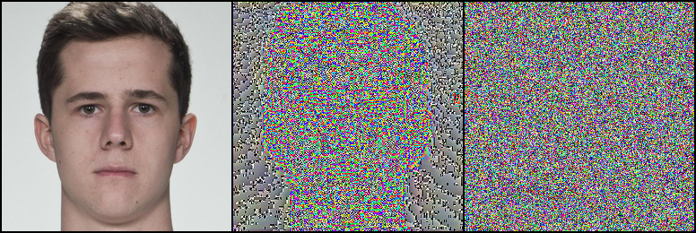
| ODE solver | NFE ↓ | AdaFace (MMPMR ↑) | ArcFace (MMPMR ↑) | ElasticFace (MMPMR ↑) |
|---|---|---|---|---|
| DDIM | 100 | 91.82 | 88.75 | 91.21 |
| DPM++ 2M | 100 | 90.59 | 87.15 | 90.80 |
| DDIM | 50 | 89.78 | 86.30 | 89.37 |
| DPM++ 2M | 50 | 90.18 | 86.50 | 88.96 |
Greedy guided generation
Identity-guided generation massively improved the effectiveness of GAN-based morphs; however, these techniques relied on being able to solve
\begin{equation} \bfz^* = \argmin_{\bfz \in \Z} \quad \mathcal{L}(g(\bfz), \bfx_0^{(a)}, \bfx_0^{(b)}) \end{equation}efficiently w.r.t. some loss function $\mathcal{L}$ with generator network $g: \Z \to \X$ and requires the gradient $\partial \mathcal{L} / \partial \bfz$ to perform optimization in the latent space. However, obtaining an analogous gradient in DiM is not a trivial task due to the iterative generative nature of diffusion models. Naïvely trying to estimate the gradient by backpropagating through all the neural network evaluations is horrendously inefficient and will consume the memory of all but the largest of rigs. While there is active research on efficiently estimating the gradients for diffusion models $\partial \mathcal{L} / \partial \bfx_T$ and $\partial \mathcal{L} / \partial \bfz$ — see and our own work — we instead propose an elegant solution tailored for the face morphing problem.
We don't actually care about the intermediate latents $\bfx_T^{(ab)}, \bfz_{ab}$ — just the output $\bfx_0^{(ab)}$.
With this insight we instead propose a greedy strategy that optimizes each step of the ODE solver $\Phi$ w.r.t. the identity loss. We propose a new family of DiM algorithms called Greedy-DiM which leverages this greedy strategy to generate optimal morphs.
| DiM | Fast-DiM | Morph-PIPE | Greedy-DiM | |
|---|---|---|---|---|
| ODE solver | DDIM | DPM++ 2M | DDIM | DDIM |
| Number of sampling steps | 100 | 50 | 2100 | 20 |
| Heuristic function | ✘ | ✘ | $\mathcal{L}_{ID}^*$ | $\mathcal{L}_{ID}^*$ |
| Search strategy | ✘ | ✘ | Brute-force search | Greedy optimization |
| Search space | ✘ | ✘ | Set of 21 morphs | $\X$ |
| Probability the search space contains the optimal solution | ✘ | ✘ | 0 | 1 |
To further motivate Greedy-DiM we highlight recent work by who also explored the problem of identity-guided generation with DiMs. They proposed Morph-PIPE, a simple extension of our DiM algorithm by incorporating identity information, and succeed in improving upon vanilla DiM. The approach can be summarized as:
- Find latent representations $\bfx_T^{(a)},\bfx_T^{(b)},\bfz_a,\bfz_b$.
- Create a set of $N = 21$ blend parameters $\{\gamma_n\}_{n=1}^N \subseteq [0, 1]$.
- Generate $N$ morphs with latents $\slerp(\bfx_T^{(a)},\bfx_T^{(b)};\gamma_n)$ and $\lerp(\bfz_a, \bfz_b; \gamma_n)$.
- Select the best morph w.r.t. the identity loss $\mathcal{L}_{ID}^*$.The identity loss was initially proposed by and was slightly modified by, defined as the sum of two sub-losses: $\mathcal{L}_{ID} = d(v_{ab}, v_a) + d(v_{ab}, v_b)$, $\mathcal{L}_{diff} = \big|d(v_{ab}, v_a) - d(v_{ab}, v_b)\big|$, with $\mathcal{L}_{ID}^* = \mathcal{L}_{ID} + \mathcal{L}_{diff}$, where $v_a = F(\bfx_0^{(a)})$, $v_b = F(\bfx_0^{(b)})$, $v_{ab} = F(\bfx_0^{(ab)})$, and $F: \X \to V$ is an FR system which embeds images into a vector space $V$ equipped with a measure of distance $d$, e.g., cosine distance.
While Morph-PIPE does outperform DiM, it has a few notable drawbacks.
- The approach is very computationally expensive, requiring the user to fully generate a set of $N = 21$ morphs.
- The probability that Morph-PIPE actually finds the optimal morph is 0, even as $N \to \infty$. More on this later.
In contrast, our Greedy-DiM algorithm addresses both of these issues. First, by greedily optimizing a neighborhood around the predicted noise at each step of the ODE solver, we significantly reduce the number of calls to the U-Net while simultaneously expanding the size of the search space.
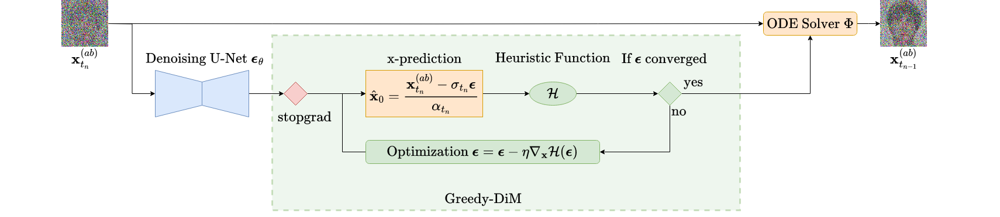
Remember that for VP-type SDEs a sample at time $t$ can be expressed as $\bfx_t = \alpha_t\bfx_0 + \sigma_t\bseps_t$ — this means we can rearrange the equation to solve for the denoised image $\bfx_0$ to find
\begin{equation} \label{eq:x-pred} \bfx_0 = \frac{\bfx_t - \sigma_t\bseps_t}{\alpha_t}. \end{equation}Therefore, we recast our noise prediction from $\bseps_\theta(\bfx_t, \bfz, t)$ into a prediction of $\bfx_0$. It is this approximation which we then pass to the identity loss $\mathcal{L}_{ID}^*$. We can then easily calculate $\nabla_{\bseps} \mathcal{L}_{ID}^*$ using an automatic differentiation library and perform gradient descent on $\bseps$ to find the optimal $\bseps$ w.r.t. the identity loss. We outline the Greedy-DiM algorithm with the following PyTorch pseudo-code.
def greedy_dim(model, encoder, diff_eq, ode_solver, x_a, x_b, loss_fn,
eps=0.002, T=80., n_encode=250, n_sample=20, n_opt_steps=50, opt_kwargs={}):
"""
Greedy-DiM algorithm.
Args:
model (nn.Module): Noise prediction U-Net (or x-prediction / v-prediction).
encoder (nn.Module): Encoder network.
diff_eq (function): RHS of Probability Flow ODE.
ode_solver (function): Numerical ODE solver, must be first-order!
x_a (torch.Tensor): Image of identity a.
x_b (torch.Tensor): Image of identity b.
loss_fn (callable): Loss function to guide generation.
eps (float): Starting timestep. Defaults to 0.002. For numeric stability.
T (float): Terminal timestep. Defaults to 80.
n_encode (int): Number of encoding steps. Defaults to 250.
n_sample (int): Number of sampling steps. Defaults to 20.
n_opt_steps (int): Optimization steps per ODE-solver step. Defaults to 50.
opt_kwargs (dict): Dictionary of optimizer arguments. Defaults to {}.
Returns:
x_morph (torch.Tensor): The morphed image.
"""
# Create latents
z_a = encoder(x_a)
z_b = encoder(x_b)
# Encode images into noise
timesteps = torch.linspace(eps, T, n_encode)
xs = ode_solver(torch.cat((x_a, x_b), dim=1), torch.cat((z_a, z_b), dim=1), diff_eq, timesteps)
x_a, x_b = xs.chunk(2, dim=1)
# Morph representations
z = torch.lerp(z_a, z_b, 0.5)
xt = slerp(x_a, x_b, 0.5) # assumes slerp is defined somewhere
# Generate morph
timesteps = torch.linspace(T, eps, n_sample)
# Perform greedy optimization
for i, t in enumerate(timesteps[:-1]):
with torch.no_grad():
eps = model(xt, z, t)
eps = eps.detach().clone().requires_grad_(True)
opt = torch.optim.RAdam([eps], **opt_kwargs)
x0_pred = convert_eps_to_x0(eps, t, xt.detach()) # assumes Eq. (15) is implemented
best_loss = loss_fn(x0_pred)
best_eps = eps
# Gradient descent on epsilon to find epsilon*
for _ in range(n_opt_steps):
opt.zero_grad()
x0_pred = convert_eps_to_x0(eps, t, xt.detach())
loss = loss_fn(x0_pred)
do_update = (loss < best_loss).float() # handles batches of morphs
best_loss = do_update * loss + (1. - do_update) * best_loss
best_eps = do_update[:, None, None, None] * eps + (1. - do_update)[:, None, None, None] * best_eps
loss.mean().backward()
opt.step()
eps = best_eps
# Use the approximated epsilon* to take the next step of the ODE solver
xt = ode_solver(xt, z, diff_eq, [t, timesteps[i+1]])
return xt
This simple greedy strategy results in massive improvements over DiM in both visual fidelity and morphing performance. The performance of Greedy-DiM is unreasonably effective, fooling the studied FR systems 100% of the time.
| Morphing attack | NFE ↓ | AdaFace ↑ | ArcFace ↑ | ElasticFace ↑ |
|---|---|---|---|---|
| FaceMorpher | — | 89.78 | 87.73 | 89.57 |
| OpenCV | — | 94.48 | 92.43 | 94.27 |
| MIPGAN-I | — | 72.19 | 77.51 | 66.46 |
| MIPGAN-II | — | 70.55 | 72.19 | 65.24 |
| DiM | 350 | 92.23 | 90.18 | 93.05 |
| Fast-DiM | 300 | 92.02 | 90.18 | 93.05 |
| Morph-PIPE | 2350 | 95.91 | 92.84 | 95.30 |
| Greedy-DiM | 270 | 100 | 100 | 100 |
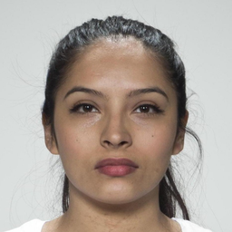
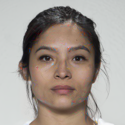


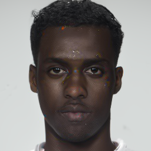


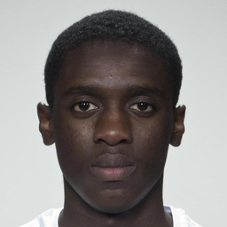
Figure 9Visual comparison of DiM methods. Notice the prominent red and blue saturation artefacts present in DiM and Morph-PIPE. These are absent in Greedy-DiM.
Given the unreasonably strong empirical performance, a natural question is to ask why Greedy-DiM performs so well. First, this greedy strategy is globally optimal (Theorem 3.1 in). This means that at every timestep the locally optimal choice is globally optimal. Because of Equation (\ref{eq:x-pred}) it follows that for any two points along the same solution trajectory $\bfx_s, \bfx_t$ with $s, t \in [0, T]$ and using a first-order solver for the Probability Flow ODE, $\bseps_s = \bseps_t$ — i.e., they have the same realization of noise.This is only true for diffusion models using the Probability Flow ODE formulation. It is more complicated to ensure this for diffusion SDEs, the math of which is beyond the scope of this post. Hence, at any time $t$, the $\bseps_t$ which minimizes the identity loss is globally optimal. The second justification for the unreasonable performance of Greedy-DiM lies in the structure of its search space.
The search space of Greedy-DiM is well-posed
The search space of Greedy-DiM is well-posed, meaning the probability the search space contains the optimal solution is 1. Formally, let $\pr$ be a probability measure on a compact subset $\X$ which denotes the distribution of the optimal face morph. For technical reasons we also assume $\pr$ is absolutely continuousA measure $\mu$ on measurable space $(\X, \Sigma)$ is said to be absolutely continuous w.r.t. $\nu$ iff $(\forall A \in \Sigma) \; \nu(A) = 0 \implies \mu(A) = 0$. w.r.t. the $n$-dimensional Lebesgue measure $\lambda^n$ on $\X$. The probability that the optimal face morph lies on some set $A \subseteq \X$ is denoted as $\pr(A)$. Then let $\mathcal{S}_P$ denote the search space of Morph-PIPE and $\mathcal{S}^*$ that of Greedy-DiM. With some measure theory it is simple to prove that $\pr(\mathcal{S}_P) = 0$ and $\pr(\mathcal{S}^*) = 1$ (Theorem 3.2 in).
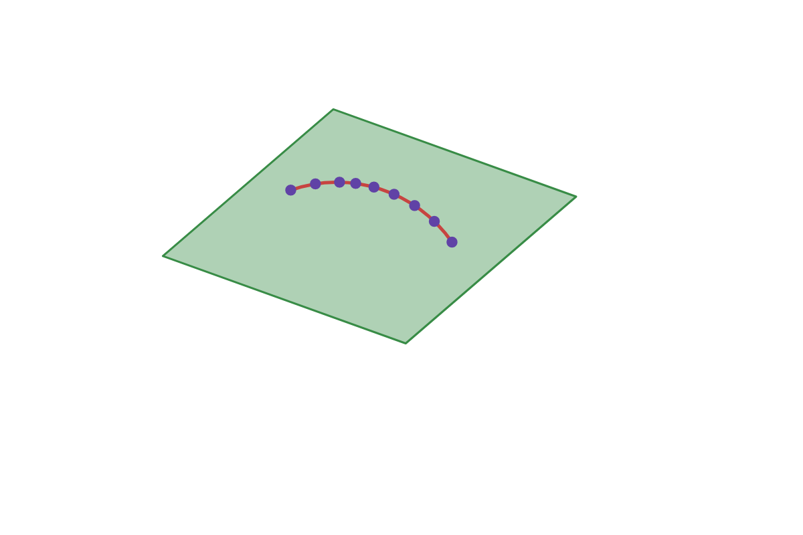
Intuitively, the $N = 21$ countably finite number of morphs that Morph-PIPE explores is infinitesimally small compared to the whole search space, which is a compact subset of Euclidean space.
The search space of Greedy-DiM allows it to find the optimal morph, while Morph-PIPE's forbids this.
Due to this ability of Greedy-DiM to better explore the space of morphs, we can find the optimal morph. This, combined with the globally optimal substructure of the identity-guided DiM problem, gives a reasonable explanation for why Greedy-DiM fooled the studied FR systems 100% of the time.
Note: the reason the numerical ODE solver $\Phi$ must be first-order is that our greedy strategy breaks the guarantees needed to accurately estimate the $n$-th order derivatives used in high-order solvers.
Concluding remarks
This post gives a detailed introduction to DiM. I develop the motivation for DiM and its successors Fast-DiM and Greedy-DiM through a principled analysis of the face morphing problem. I was then able to demonstrate that this new family of morphing attacks pose a serious threat to FR systems and represent a significant advance in face morphing attacks. This post is a compilation of several papers we have published in the last few years; please visit them if you are interested in more details.
- Zander W. Blasingame and Chen Liu. Greedy-DiM: Greedy Algorithms for Unreasonably Effective Face Morphs. IJCB 2024.
- Zander W. Blasingame and Chen Liu. Leveraging Diffusion for Strong and High Quality Face Morphing Attacks. IEEE TBIOM 2024.
- Zander W. Blasingame and Chen Liu. Fast-DiM: Towards Fast Diffusion Morphs. IEEE Security & Privacy 2024.
- Richard E. Neddo, Zander W. Blasingame, and Chen Liu. The Impact of Print-and-Scan in Heterogeneous Morph Evaluation Scenarios. IJCB 2024.
For more reading on more efficiently estimating the gradients of diffusion models, please check out our recent paper.
Interestingly, our work on Greedy-DiM bears some similarity to recent work done by , as they also end up doing a one-shot gradient estimation via $\bfx_0$-prediction; however, they develop their approach from the perspective of energy guidance.
It is my belief that the insights gained here are not only relevant to face morphing, but also to other downstream tasks with diffusion models — e.g., template inversion, guided generation, adversarial attacks, and even other modalities like audio.
If you would like to cite this post in an academic context, you
can use this BibTeX snippet:
@misc{blasingame2024dimblog,
title = {Face Morphing with Diffusion Models},
author = {Blasingame, Zander W.},
year = {2024},
month = aug,
howpublished = {\url{https://zblasingame.github.io/writings/face-morphing-dim/}},
note = {Blog post},
}